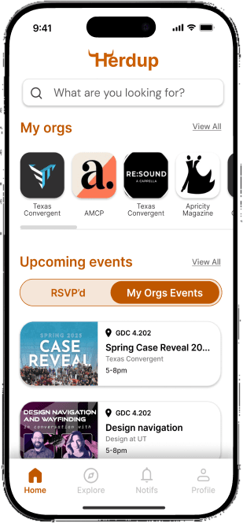

HerdUp App
HerdUp is a mobile-first app that enhances the HornsLink experience with a more intuitive interface, helping students easily discover organizations, RSVP to events, and engage with campus life.

Challenge
HornsLink is UT's main platform for discovering student organizations and events, but its poor mobile experience and complex navigation make it difficult for students, especially freshmen and transfers, to quickly find organizations that align with their interests, creating barriers when first getting involved on campus.
Results
HerdUp reimagines the HornsLink experience to better support how students discover and engage with organizations. The final designs prioritize interest-based discovery, clearer organization profiles, and a simplified path to event exploration and RSVPs. By reducing cognitive load and improving navigation, HerdUp creates a more approachable entry point for campus involvement, especially for freshmen and transfer students, making it easier to find communities that align with their interests.
Process
Collaborating with Stakeholders to Prioritize Features
We met regularly with our client and stakeholders to align on goals, review design directions, and prioritize features. Each iteration included internal critique with our design lead before presenting updates, ensuring feedback was incorporated early and consistently throughout the design process.
User Research
We conducted surveys with UT students to understand how they discover organizations and engage with campus life, using a mix of quantitative questions and open-ended responses. Key insights included:
- 88% of students discover organizations through fragmented channels (Instagram, friends, tabling), which, while effective individually, can lead to missed opportunities for both students and organizations and reduce a sense of belonging due to lack of centralized visibility.
- ~60% of respondents were freshmen actively seeking involvement, highlighting the need for stronger support during early exploration.
- "People" and "networking" emerged as primary motivators for joining organizations, emphasizing the importance of social connection in campus engagement.
These insights informed design decisions around personalized discovery and pathways that support both efficient exploration and stronger community connection.
User Archetypes & Needs
We synthesized research into core user groups to guide design decisions:
- Students New to Campus Life — Need a clear way to understand what organizations exist and which ones fit their interests.
- Students Seeking Specific Interests — Need a way to quickly surface organizations that match hobbies, majors, or career goals without sifting through dozens of options.
- Students Representing Organizations — Need a simple, effective way to reach the right audience and increase visibility among students who may not discover them otherwise.
Exploring Onboarding and Discovery Flows for Campus Involvement
We started with low-fidelity wireframes to explore initial onboarding and discovery flows. As we tested early concepts, we iterated on the designs and shifted focus toward simplifying navigation and strengthening the path from discovery to engagement, particularly around organization profiles and RSVPs. This helped clarify key user journeys before moving into higher fidelity design.
Structuring the Organization Discovery and Engagement Experience
Using the user flows as a foundation, we created low-fidelity wireframes to establish structure, layout, and core functionality. These early sketches allowed us to visualize key screens and interaction patterns quickly.
Designing Intuitive Interfaces for Finding and Joining Campus Organizations
I contributed to finalizing onboarding screens and designing key surfaces including the home page, organization discovery page, organization profile page, and user profile page. The high-fidelity designs emphasize clarity, hierarchy, and usability to reduce cognitive load and make campus involvement easier to navigate.
Establishing a Consistent and Accessible Visual System for Campus Platforms
We expanded the brand's colors and added accessible feedback states, switched to DM Sans for legibility, and built a library of standardized UI components to ensure a consistent, cohesive platform.
Conclusion
Through research-driven design, HerdUp reimagines how students discover and engage with organizations on campus. By understanding the needs of new students, interest-based seekers, and organization representatives, we were able to prioritize features that simplify discovery, improve relevance, and increase visibility. My contributions to onboarding and key screens, including the home page, organization profiles, user profiles, and discovery flow, helped create a cohesive, user-centered experience that makes campus involvement easier, faster, and more engaging. Moving forward, these designs provide a strong foundation for further iterations and testing with real students.